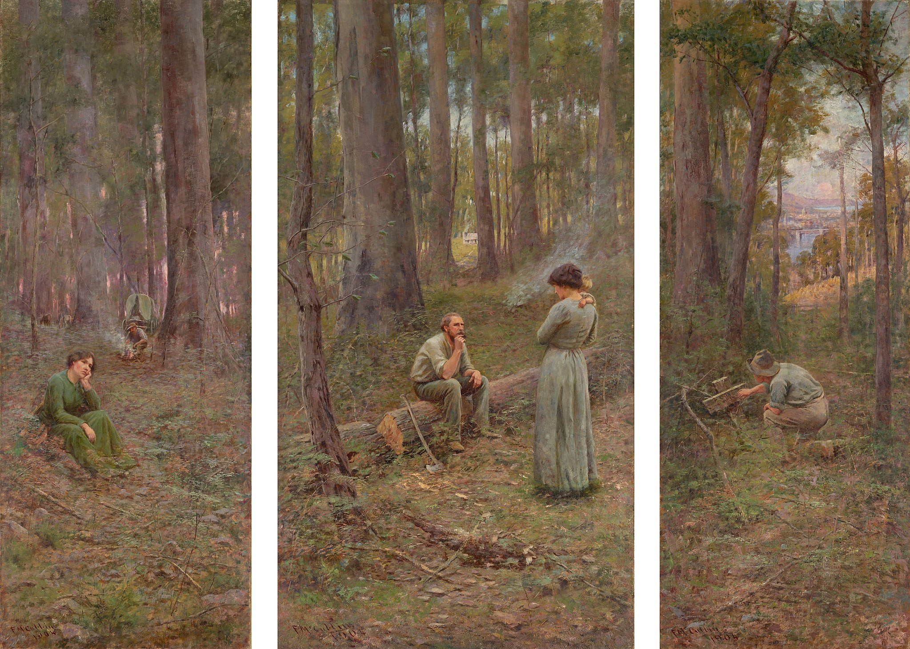

<head>
<meta charset="UTF-8" />
<meta name="keywords" content="drawing, painting" />
<meta name="description" content="drawings by Sunjy" />
<title>Sunjy</title>
<link rel="shortcut icon" type="image/x-icon" href="../../mImages/mCommon/favicon.ico" media="screen" />
<link rel="stylesheet" type="text/css" href="../../mCsses/mCommon/mCssA.css" />
<link rel="stylesheet" type="text/css" href="../../mCsses/mCommon/mCssB.css" />
<link rel="stylesheet" type="text/css" href="../../mCsses/mCommon/mCssC.css" />
<link rel="stylesheet" type="text/css" href="../../mCsses/mCommon/mCssD.css" />
<link rel="stylesheet" type="text/css" href="../../mCsses/mContent/mCssA.css" />
<link rel="stylesheet" type="text/css" href="../../mCsses/mContent/mCssB.css" />
<link rel="stylesheet" type="text/css" href="../../mCsses/mContent/mCssC.css" />
<link rel="stylesheet" type="text/css" href="../../mCsses/mContent/mCssD.css" />
</head>
<script type="text/javascript" src="../../mScripts/mContent/mContentAA.js" /></script>
<script type="text/javascript" src="../../mScripts/mContent/mContentAB.js" /></script>
<script type="text/javascript" src="../../mScripts/mContent/mContentAC.js" /></script>
<script type="text/javascript" src="../../mScripts/mContent/mContentAD.js" /></script>
<script type="text/javascript"></script> 
<script type="text/javascript">
document.write('<div class="mImgAbsolute"></div>');
/*
document.write('<p class="mFontSizeBColor" />From a white paper...</p>');
document.write('<table class="center"><tr><td>');
document.write('');
document.write('</td></tr></table>');
*/
</script>


<script type="text/javascript">
document.write('<p class="mFontSizeBColor" />The Pioneer</p>');
document.write('<p class="mFontSizeSColor" />“The Pioneer” by Frederick McCubbin was painted in 1904 as a triptych depicting the story of a settler family making a living in the Australian bush. The left panel shows the settler and his wife on their “selection.”<br><br>“Selection” referred to the free selection program of crown land in some Australian colonies in the 1860s. In the middle of the bush is the wagon with the man who is starting a campfire. In the foreground, the woman is deep in thought.<br><br>In the center panel, the passage of time is indicated by the young child in the woman’s arms. The family home can be seen in the center through a clearing in the trees.<br><br>The clearing shows where the trees have been removed to create pasture and tillable land. The right panel shows that time has moved on with a city visible in the background.<br><br>A young man is kneeling and clearing a grave. Is the young man kneeling, the young boy from the center panel?<br><br>This triptych is a masterpiece of Australian art. It was produced three years after Australian Federation and from one perspective was a display of nationalistic pride in the Australian pioneer legacy and the future prosperity of the city in the background.<br><br>Australian Impressionism<br><br>During the 1870s and 1880s, European artists immigrated to Australia and brought their experience of Plein–air movement to Australia.<br><br>Through their work and teaching, they made significant contributions to the development of Impressionism in Australia. Drawing on naturalist and impressionist ideas, they sought to capture Australian life, the bush, and the sunlight of the country.<br><br>In French Impressionism, colors were painted with more explosive energy and with more pure primary and secondary tones for complementary contrasts.<br><br>Australian Impressionists tended to show Australian tones of dry soil, eucalypt woods, and sand, with the dabbling of warm and cold colors.<br><br>Australian Impressionism is notable for its compositions of Australia’s cultural heritage.<br><br>During the period after Australia’s Federation in 1901, Australian nationalism and Australian Impressionists provided works that have become icons of a passing Australia.<br></p>');
document.write('<table class="center" /><tr><td>');
document.write('<br>“Selection” referred to the free selection program of crown land in some Australian colonies in the 1860s. In the middle of the bush is the wagon with the man who is starting a campfire. In the foreground, the woman is deep in thought.<br><br>In the center panel, the passage of time is indicated by the young child in the woman’s arms. The family home can be seen in the center through a clearing in the trees.<br><br>The clearing shows where the trees have been removed to create pasture and tillable land. The right panel shows that time has moved on with a city visible in the background.<br><br>A young man is kneeling and clearing a grave. Is the young man kneeling, the young boy from the center panel?<br><br>This triptych is a masterpiece of Australian art. It was produced three years after Australian Federation and from one perspective was a display of nationalistic pride in the Australian pioneer legacy and the future prosperity of the city in the background.<br><br>Australian Impressionism<br><br>During the 1870s and 1880s, European artists immigrated to Australia and brought their experience of Plein–air movement to Australia.<br><br>Through their work and teaching, they made significant contributions to the development of Impressionism in Australia. Drawing on naturalist and impressionist ideas, they sought to capture Australian life, the bush, and the sunlight of the country.<br><br>In French Impressionism, colors were painted with more explosive energy and with more pure primary and secondary tones for complementary contrasts.<br><br>Australian Impressionists tended to show Australian tones of dry soil, eucalypt woods, and sand, with the dabbling of warm and cold colors.<br><br>Australian Impressionism is notable for its compositions of Australia’s cultural heritage.<br><br>During the period after Australia’s Federation in 1901, Australian nationalism and Australian Impressionists provided works that have become icons of a passing Australia.<br>" />');
document.write('</td></tr></table>');
</script>


